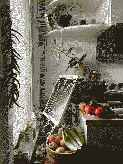

power
We are working on having this website run on a solar-powered server located in Toronto, which will go off-line during longer periods of bad weather. This page shows live data relating to power supply, power demand, and energy storage.
supply
This is a forecast for the coming days, updated daily:
This weather forecast is powered by BrightSky.
demand
These are live power statistics of the solar-powered server:
- status
- waiting for live data
- load average
- —
- power draw
- —
- last updated
- —
(* load average per 10 minutes)
battery meter
The background at the top of every page is a battery meter, designed to display the relationship of the energy powering the website and the visitor traffic consuming it.
Inspiration
We are inspired by LOW←TECH MAGAZINE, compost.party, Permacomputing as practice for digital Graphic Design, and Solar Protocol.
